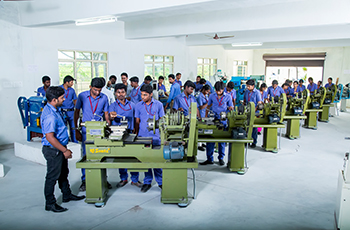

- Home
- Departments
- Mechanical Department
Mechanical Department
Mechanical engineering is a diverse subject that derives its breadth from the need to design and manufacture everything from small individual parts and devices (e.g., microscale sensors and inkjet printer nozzles) to large systems (e.g., spacecraft and machine tools).The role of a mechanical engineer is to take a product from an idea to the marketplace. In order to accomplish this, a broad range of skills are needed.The mechanical engineer needs to understand the forces and the thermal environment that a product, its parts, or its subsystems will encounter; to design them for functionality, aesthetics, and the ability to withstand the forces and the thermal environment they will be subjected to; and to determine the best way to manufacture them and ensure they will operate without failure.
Vision
To transform the learners into globally competitive expertise professionals in the field of Mechanical Engineering by providing the state of the art facilities.
Mission
The department is committed to:
- M1: To provide quality mechanical engineering education by continuously upgrading the knowledge and academic infrastructure.
- M2: To offer need based training to the learners relevant to mechanical engineering.
- M3: To inculcate in students minds about Professional ethics, Human Values and Environmental issues in Engineering.
Degree Offered
- B.E. Mechanical Engineering
Teaching Faculty
Professors/Assistant Professors
- Dr. K.P. Dhanabalakrishnan Ph.D(Professor)
- Dr. A. Dhanamurugan Ph.D(Professor)
- Dr. P. Muthusamy Ph.D(Assistant Professor)
- Mr. P. Rajesh Vinoth Kumar M.E., M.B.A., PGD-PE(Assistant Professor).
- Mr. A. Leelakrishnan M.E.(Assistant Professor)
- Mr. R. Prakash M.E.(Assistant Professor)
- Mr. R.Ganesh M.E.(Assistant Professor)
- Mr. T. Karthickkumar M.E.(Assistant Professor)
- Mr. M. Arulmurugan M.E.(Assistant Professor)
- Mr. T. Varunprasanth M.E.(Assistant Professor)
Non-Teaching Faculty
- Mr. N. Gopalakrishnan D.M.E. (Lab Technician)
The department of Mechanical Engineering, being one of the largest and oldest departments, caters to its students with class tutorial and state-of-the-art laboratories. The department is continuously striving to achieve excellence in education, academic and industry oriented research as well as consultancy work with service to the society.
We aim to provide our students with a perfect blend of intellectual and practical experiences that helps them to serve our society and address a variety of needs. At the end of our program, students are prepared for entry-level work as a mechanical engineer as well as for the post-graduate study in mechanical engineering, where a fundamental engineering background constitutes a desirable foundation. Academic course work and projects are designed to endow students with the ability to apply knowledge of science, mathematics, and engineering, and the capability to work effectively in multidisciplinary teams, providing leadership and technical expertise.
Since these skills are required for virtually everything that is made, mechanical engineering is perhaps the broadest and most diverse of engineering disciplines. Mechanical engineers play a central role in such industries as automotive; aerospace; biotechnology; computers and electronics; microelectromechanical systems (MEMS); energy conversion; environmental control; automation; manufacturing and microfabrication. To put it simply, mechanical engineering deals with anything that moves, including the human body, a very complex machine.
Our department faculty members are highly qualified with experience in academic and industries with diverse specializations in areas of Design, Manufacturing, Thermal, Materials Technology, Mechatronics and Energy Engineering.

The following laboratories are available in the Mechanical Engineering department.
- Manufacturing Technology Laboratory
- Fluid Mechanics and Machinery Laboratory
- Thermal Engineering Laboratory - I
- Thermal Engineering Laboratory - II
- Metrology and Measurements Laboratory
- Dynamics of Machinery Laboratory
- Mechatronics Laboratory
- CAD / CAM Laboratory
- Engineering Practices Laboratory
The Association of Mechanical Engineering Department organizes workshops, seminars, symposia, conferences and guest lectures by inviting experts from industries and academic institutions for the benefit of the students. Also various training programmes are organized in the fundamental and frontier topics of all the subjects which are concept oriented for getting placed in reputed organizations. Students are taken for industrial tour/visit in order to gain more practical knowledge in the field of mechanical engineering. Inplant training in the industries related to mechanical engineering are given to the students which will be helpful in doing their project works.
PROGRAMME EDUCATIONAL OBJECTIVES
- PEO1: To learn the fundamental and technical knowledge in the field of Mechanical Engineering and allied fields.
- PEO2: To develop students with professional and ethical attitude, effective communication and managerial skills.
- PEO3: To inculcate students with professional and ethical attitude, effective communication and managerial skills.
PROGRAMME OUTCOMES
- Communicate effectively with the engineering community and with society.
- Comprehend and write effective reports and design documentation.
- Apply the engineering knowledge to solve problems in different areas..
- Design and develop the solutions for complex processes to meet the need of the society.
- Develop the skills to use modern and advanced tools.
- Develop the projects using tools for environmental conservation and sustainable development.
- Understand the impact of the professional engineering solutions in societal and environmental contexts, and demonstrate the knowledge of, and need for sustainable development.
- Apply ethical principles and commit to professional ethics and responsibilities and norms of the engineering practice.
- Function effectively as an individual, and as a member or leader in diverse teams, and in multidisciplinary settings.
- Learning and following the Management principles involved in research and industrial practices..
- Engage in life-long learning towards the area of specialization in Mechanical Engineering.
- Life-long learning: Recognize the need for, and have the preparation and ability to engage in independent and life-long learning in the broadest context of technological change.
PROGRAM SPECIFIC OBJECTIVES (PSOs)
- Apply the mechanical engineering knowledge to the existing mechanical engineering systems to solve the real life problems.
- Plan, design, develop and manage mechanical systems for societal requirements.
- Apply the knowledge of different processes in manufacturing and industrial engineering practices for the fabrication of various engineering equipments.
The department has signed an MoU with MTAB Technology Centre Pvt. Ltd., Chennai in the areas of training in advanced technologies, conduct certified programmes for students and faculty development programmes for faculty members.
Technical Quiz
- MA3351 Transforms and Partial Differential Equations
- ME3351 Engineering Mechanics
- ME3391Engineering Thermodynamics
- CE3391 Fluid Mechanics and Machinery
- ME3392Engineering Materials and Metallurgy
- ME3393 Manufacturing Processes
- ME3591/Design of Machine Elements
- ME3592/Metrology and Measurements
- CME380/Automobile Engineering
- CME396/Process Planning and cost estimation
- MX3084/Disaster management
- CME354 Failure Analysis and NDT Techniques
- ME3791/Mechatronics and IoT
- ME3792/Computer Integrated Manufacturing
- GE3791/Human Values and Ethics
- GE3792/Industrial Management
- OIM353/Production Planning and Control
- OML351/Introduction to non-destructive testing
- GE3791/Human Values and Ethics
- GE3752/Total Quality Management
Odd Semester |
Even Semester |